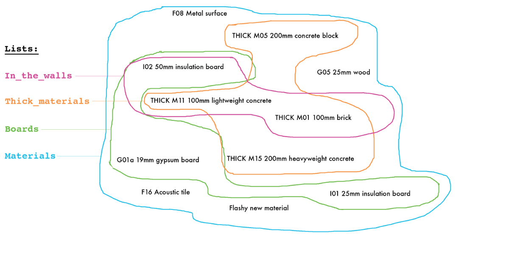

Eppy Tutorial¶
Authors: Santosh Philip, Leora Tanjuatco
Eppy is a scripting language for E+ idf files, and E+ output files. Eppy is written in the programming language Python. As a result it takes full advantage of the rich data structure and idioms that are avaliable in python. You can programmatically navigate, search, and modify E+ idf files using eppy. The power of using a scripting language allows you to do the following:
- Make a large number of changes in an idf file with a few lines of eppy code.
- Use conditions and filters when making changes to an idf file
- Make changes to multiple idf files.
- Read data from the output files of a E+ simulation run.
- Based to the results of a E+ simulation run, generate the input file for the next simulation run.
So what does this matter? Here are some of the things you can do with eppy:
- Change construction for all north facing walls.
- Change the glass type for all windows larger than 2 square meters.
- Change the number of people in all the interior zones.
- Change the lighting power in all south facing zones.
- Change the efficiency and fan power of all rooftop units.
- Find the energy use of all the models in a folder (or of models that were run after a certain date)
- If a model is using more energy than expected, keep increasing the R-value of the roof until you get to the expected energy use.
Quick Start¶
Here is a short IDF file that I’ll be using as an example to start us off
VERSION,
7.2; !- Version Identifier
SIMULATIONCONTROL,
Yes, !- Do Zone Sizing Calculation
Yes, !- Do System Sizing Calculation
Yes, !- Do Plant Sizing Calculation
No, !- Run Simulation for Sizing Periods
Yes; !- Run Simulation for Weather File Run Periods
BUILDING,
White House, !- Name
30., !- North Axis {deg}
City, !- Terrain
0.04, !- Loads Convergence Tolerance Value
0.4, !- Temperature Convergence Tolerance Value {deltaC}
FullExterior, !- Solar Distribution
25, !- Maximum Number of Warmup Days
6; !- Minimum Number of Warmup Days
SITE:LOCATION,
CHICAGO_IL_USA TMY2-94846, !- Name
41.78, !- Latitude {deg}
-87.75, !- Longitude {deg}
-6.00, !- Time Zone {hr}
190.00; !- Elevation {m}
To use eppy to look at this model, we have to run a little code first: In[1]: .. code:: python
# you would normaly install eppy by doing # python setup.py install # or # pip install eppy # or # easy_install eppy
# if you have not done so, uncomment the following three lines import sys # pathnameto_eppy = ‘c:/eppy’ pathnameto_eppy = ‘../’ sys.path.append(pathnameto_eppy)
from eppy import modeleditor from eppy.modeleditor import IDF iddfile = ”../eppy/resources/iddfiles/Energy+V7_2_0.idd” fname1 = ”../eppy/resources/idffiles/V_7_2/smallfile.idf”
In[2]: .. code:: python
IDF.setiddname(iddfile) idf1 = IDF(fname1)
idf1 now holds all the data to your in you idf file.
Now that the behind-the-scenes work is done, we can print this file. In[3]: .. code:: python
idf1.printidf()
VERSION,
7.3; !- Version Identifier
SIMULATIONCONTROL,
Yes, !- Do Zone Sizing Calculation
Yes, !- Do System Sizing Calculation
Yes, !- Do Plant Sizing Calculation
No, !- Run Simulation for Sizing Periods
Yes; !- Run Simulation for Weather File Run Periods
BUILDING,
Empire State Building, !- Name
30.0, !- North Axis
City, !- Terrain
0.04, !- Loads Convergence Tolerance Value
0.4, !- Temperature Convergence Tolerance Value
FullExterior, !- Solar Distribution
25, !- Maximum Number of Warmup Days
6; !- Minimum Number of Warmup Days
SITE:LOCATION,
CHICAGO_IL_USA TMY2-94846, !- Name
41.78, !- Latitude
-87.75, !- Longitude
-6.0, !- Time Zone
190.0; !- Elevation
Looks like the same file as before, except that all the comments are slightly different.
As you can see, this file has four objects:
- VERSION
- SIMULATIONCONTROL
- BUILDING
- SITE:LOCATION
So, let us look take a closer look at the BUILDING object. We can do this using this command:
print filename.idfobjects['OBJECTNAME']
In[4]: .. code:: python
print idf1.idfobjects[‘BUILDING’] # put the name of the object you’d like to look at in brackets
[
BUILDING,
Empire State Building, !- Name
30.0, !- North Axis
City, !- Terrain
0.04, !- Loads Convergence Tolerance Value
0.4, !- Temperature Convergence Tolerance Value
FullExterior, !- Solar Distribution
25, !- Maximum Number of Warmup Days
6; !- Minimum Number of Warmup Days
]
We can also zoom in on the object and look just at its individual parts.
For example, let us look at the name of the building.
To do this, we have to do some more behind-the-scenes work, which we’ll explain later. In[5]: .. code:: python
building = idf1.idfobjects[‘BUILDING’][0]
Now we can do this: In[6]: .. code:: python
print building.Name
Empire State Building
Now that we’ve isolated the building name, we can change it. In[7]: .. code:: python
building.Name = “Empire State Building”
In[8]: .. code:: python
print building.Name
Empire State Building
Did this actually change the name in the model ? Let us print the entire model and see. In[9]: .. code:: python
idf1.printidf()
VERSION,
7.3; !- Version Identifier
SIMULATIONCONTROL,
Yes, !- Do Zone Sizing Calculation
Yes, !- Do System Sizing Calculation
Yes, !- Do Plant Sizing Calculation
No, !- Run Simulation for Sizing Periods
Yes; !- Run Simulation for Weather File Run Periods
BUILDING,
Empire State Building, !- Name
30.0, !- North Axis
City, !- Terrain
0.04, !- Loads Convergence Tolerance Value
0.4, !- Temperature Convergence Tolerance Value
FullExterior, !- Solar Distribution
25, !- Maximum Number of Warmup Days
6; !- Minimum Number of Warmup Days
SITE:LOCATION,
CHICAGO_IL_USA TMY2-94846, !- Name
41.78, !- Latitude
-87.75, !- Longitude
-6.0, !- Time Zone
190.0; !- Elevation
Yes! It did. So now you have a taste of what eppy can do. Let’s get started!
Modifying IDF Fields¶
That was just a quick example – we were showing off. Let’s look a little closer.
As you might have guessed, changing an IDF field follows this structure:
object.fieldname = "New Field Name"
Plugging the object name (building), the field name (Name) and our new field name (“Empire State Building”) into this command gave us this: In[10]: .. code:: python
building.Name = “Empire State Building”
In[11]: .. code:: python
import eppy # import eppy.ex_inits # reload(eppy.ex_inits) import eppy.ex_inits
But how did we know that “Name” is one of the fields in the object “building”?
Are there other fields?
What are they called?
Let’s take a look at the IDF editor: In[12]: .. code:: python
from eppy import ex_inits #no need to know this code, it just shows the image below for_images = ex_inits for_images.display_png(for_images.idfeditor)

In the IDF Editor, the building object is selected.
We can see all the fields of the object “BUILDING”.
They are:
- Name
- North Axis
- Terrain
- Loads Convergence Tolerance Value
- Temperature Convergence Tolerance Value
- Solar Distribution
- Maximum Number of Warmup Days
- Minimum Number of Warmup Days
Let us try to access the other fields. In[13]: .. code:: python
print building.Terrain
City
How about the field “North Axis” ?
It is not a single word, but two words.
In a programming language, a variable has to be a single word without any spaces.
To solve this problem, put an underscore where there is a space.
So “North Axis” becomes “North_Axis”. In[14]: .. code:: python
print building.North_Axis
30.0
Now we can do: In[15]: .. code:: python
print building.Name print building.North_Axis print building.Terrain print building.Loads_Convergence_Tolerance_Value print building.Temperature_Convergence_Tolerance_Value print building.Solar_Distribution print building.Maximum_Number_of_Warmup_Days print building.Minimum_Number_of_Warmup_Days
Empire State Building
30.0
City
0.04
0.4
FullExterior
25
6
Where else can we find the field names?
The IDF Editor saves the idf file with the field name commented next to field.
Eppy also does this.
Let us take a look at the “BUILDING” object in the text file that the IDF Editor saves
BUILDING,
White House, !- Name
30., !- North Axis {deg}
City, !- Terrain
0.04, !- Loads Convergence Tolerance Value
0.4, !- Temperature Convergence Tolerance Value {deltaC}
FullExterior, !- Solar Distribution
25, !- Maximum Number of Warmup Days
6; !- Minimum Number of Warmup Days
This a good place to find the field names too.
It is easy to copy and paste from here. You can’t do that from the IDF Editor.
We know that in an E+ model, there will be only ONE “BUILDING” object. This will be the first and only item in the list “buildings”.
But E+ models are made up of objects such as “BUILDING”, “SITE:LOCATION”, “ZONE”, “PEOPLE”, “LIGHTS”. There can be a number of “ZONE” objects, a number of “PEOPLE” objects and a number of “LIGHTS” objects.
So how do you know if you’re looking at the first “ZONE” object or the second one? Or the tenth one? To answer this, we need to learn about how lists work in python.
Python lesson 1: lists¶
Eppy holds these objects in a python structure called list. Let us take a look at how lists work in python. In[16]: .. code:: python
fruits = [“apple”, “orange”, “bannana”] # fruits is a list with three items in it.
To get the first item in fruits we say: In[17]: .. code:: python
fruits[0]
'apple'
Why “0” ?
Because, unlike us, python starts counting from zero in a list. So, to get the third item in the list we’d need to input 2, like this: In[18]: .. code:: python
print fruits[2]
bannana
But calling the first fruit “fruit[0]” is rather cumbersome. Why don’t we call it firstfruit? In[19]: .. code:: python
firstfruit = fruits[0] print firstfruit
apple
We also can say In[20]: .. code:: python
goodfruit = fruits[0] redfruit = fruits[0]
print firstfruit print goodfruit print redfruit print fruits[0]
apple
apple
apple
apple
As you see, we can call that item in the list whatever we want.
How many items in the list¶
To know how many items are in a list, we ask for the length of the list.
The function ‘len’ will do this for us. In[21]: .. code:: python
print len(fruits)
3
There are 3 fruits in the list.
Saving an idf file¶
This is easy: In[22]: .. code:: python
idf1.save()
If you’d like to do a “Save as...” use this: In[23]: .. code:: python
idf1.saveas(‘something.idf’)
Working with E+ objects¶
Let us open a small idf file that has only “CONSTRUCTION” and “MATERIAL” objects in it. You can go into ”../idffiles/V_7_2/constructions.idf” and take a look at the file. We are not printing it here because it is too big.
So let us open it using the idfreader - In[24]: .. code:: python
from eppy import modeleditor from eppy.modeleditor import IDF
iddfile = ”../eppy/resources/iddfiles/Energy+V7_2_0.idd” try:
IDF.setiddname(iddfile)
- except modeleditor.IDDAlreadySetError as e:
- pass
fname1 = ”../eppy/resources/idffiles/V_7_2/constructions.idf” idf1 = IDF(fname1)
Let us print all the “MATERIAL” objects in this model. In[25]: .. code:: python
materials = idf1.idfobjects[“MATERIAL”] print materials
[
Material,
F08 Metal surface, !- Name
Smooth, !- Roughness
0.0008, !- Thickness
45.28, !- Conductivity
7824.0, !- Density
500.0; !- Specific Heat
,
Material,
I01 25mm insulation board, !- Name
MediumRough, !- Roughness
0.0254, !- Thickness
0.03, !- Conductivity
43.0, !- Density
1210.0; !- Specific Heat
,
Material,
I02 50mm insulation board, !- Name
MediumRough, !- Roughness
0.0508, !- Thickness
0.03, !- Conductivity
43.0, !- Density
1210.0; !- Specific Heat
,
Material,
G01a 19mm gypsum board, !- Name
MediumSmooth, !- Roughness
0.019, !- Thickness
0.16, !- Conductivity
800.0, !- Density
1090.0; !- Specific Heat
,
Material,
M11 100mm lightweight concrete, !- Name
MediumRough, !- Roughness
0.1016, !- Thickness
0.53, !- Conductivity
1280.0, !- Density
840.0; !- Specific Heat
,
Material,
F16 Acoustic tile, !- Name
MediumSmooth, !- Roughness
0.0191, !- Thickness
0.06, !- Conductivity
368.0, !- Density
590.0; !- Specific Heat
,
Material,
M01 100mm brick, !- Name
MediumRough, !- Roughness
0.1016, !- Thickness
0.89, !- Conductivity
1920.0, !- Density
790.0; !- Specific Heat
,
Material,
M15 200mm heavyweight concrete, !- Name
MediumRough, !- Roughness
0.2032, !- Thickness
1.95, !- Conductivity
2240.0, !- Density
900.0; !- Specific Heat
,
Material,
M05 200mm concrete block, !- Name
MediumRough, !- Roughness
0.2032, !- Thickness
1.11, !- Conductivity
800.0, !- Density
920.0; !- Specific Heat
,
Material,
G05 25mm wood, !- Name
MediumSmooth, !- Roughness
0.0254, !- Thickness
0.15, !- Conductivity
608.0, !- Density
1630.0; !- Specific Heat
]
As you can see, there are many material objects in this idf file.
The variable “materials” now contains a list of “MATERIAL” objects.
You already know a little about lists, so let us take a look at the items in this list. In[26]: .. code:: python
firstmaterial = materials[0] secondmaterial = materials[1]
In[27]: .. code:: python
print firstmaterial
Material,
F08 Metal surface, !- Name
Smooth, !- Roughness
0.0008, !- Thickness
45.28, !- Conductivity
7824.0, !- Density
500.0; !- Specific Heat
Let us print secondmaterial In[28]: .. code:: python
print secondmaterial
Material,
I01 25mm insulation board, !- Name
MediumRough, !- Roughness
0.0254, !- Thickness
0.03, !- Conductivity
43.0, !- Density
1210.0; !- Specific Heat
This is awesome!! Why?
To understand what you can do with your objects organized as lists, you’ll have to learn a little more about lists.
Python lesson 2: more about lists¶
More ways to access items in a list¶
You should remember that you can access any item in a list by passing in its index.
The tricky part is that python starts counting at 0, so you need to input 0 in order to get the first item in a list.
Following the same logic, you need to input 3 in order to get the fourth item on the list. Like so: In[29]: .. code:: python
- bad_architects = [“Donald Trump”, “Mick Jagger”,
- “Steve Jobs”, “Lady Gaga”, “Santa Clause”]
print bad_architects[3]
Lady Gaga
But there’s another way to access items in a list. If you input -1, it will return the last item. -2 will give you the second-to-last item, etc. In[30]: .. code:: python
print bad_architects[-1] print bad_architects[-2]
Santa Clause
Lady Gaga
Slicing a list¶
You can also get more than one item in a list:
bad_architects[first_slice:second_slice] In[31]: .. code:: python
print bad_architects[1:3] # slices at 1 and 3
['Mick Jagger', 'Steve Jobs']
How do I make sense of this?
To understand this you need to see the list in the following manner:
[ "Donald Trump", "Mick Jagger", "Steve Jobs", "Lady Gaga", "Santa Clause" ]
^ ^ ^ ^ ^ ^
0 1 2 3 4 5
-5 -4 -3 -2 -1
The slice operation bad_architects[1:3] slices right where the numbers are.
Does that make sense?
Let us try a few other slices: In[32]: .. code:: python
print bad_architects[2:-1] # slices at 2 and -1 print bad_architects[-3:-1] # slices at -3 and -1
['Steve Jobs', 'Lady Gaga']
['Steve Jobs', 'Lady Gaga']
You can also slice in the following way: In[33]: .. code:: python
print bad_architects[3:] print bad_architects[:2] print bad_architects[-3:] print bad_architects[:-2]
['Lady Gaga', 'Santa Clause']
['Donald Trump', 'Mick Jagger']
['Steve Jobs', 'Lady Gaga', 'Santa Clause']
['Donald Trump', 'Mick Jagger', 'Steve Jobs']
I’ll let you figure that out on your own.
Adding to a list¶
This is simple: the append function adds an item to the end of the list.
The following command will add ‘something’ to the end of the list called listname:
listname.append(something)
In[34]: .. code:: python
bad_architects.append(“First-year students”) print bad_architects
['Donald Trump', 'Mick Jagger', 'Steve Jobs', 'Lady Gaga', 'Santa Clause', 'First-year students']
Deleting from a list¶
There are two ways to do this, based on the information you have. If you have the value of the object, you’ll want to use the remove function. It looks like this:
listname.remove(value)
An example: In[35]: .. code:: python
bad_architects.remove(“First-year students”) print bad_architects
['Donald Trump', 'Mick Jagger', 'Steve Jobs', 'Lady Gaga', 'Santa Clause']
What if you know the index of the item you want to remove?
What if you appended an item by mistake and just want to remove the last item in the list?
You should use the pop function. It looks like this:
listname.pop(index) In[36]: .. code:: python
what_i_ate_today = [“coffee”, “bacon”, “eggs”] print what_i_ate_today
['coffee', 'bacon', 'eggs']
In[37]: .. code:: python
what_i_ate_today.append(“vegetables”) # adds vegetables to the end of the list # but I don’t like vegetables print what_i_ate_today
['coffee', 'bacon', 'eggs', 'vegetables']
In[38]: .. code:: python
# since I don’t like vegetables what_i_ate_today.pop(-1) # use index of -1, since vegetables is the last item in the list print what_i_ate_today
['coffee', 'bacon', 'eggs']
You can also remove the second item. In[39]: .. code:: python
what_i_ate_today.pop(1)
'bacon'
Notice the ‘bacon’ in the line above.
pop actually ‘pops’ the value (the one you just removed from the list) back to you.
Let us pop the first item. In[40]: .. code:: python
was_first_item = what_i_ate_today.pop(0) print ‘was_first_item =’, was_first_item print ‘what_i_ate_today = ‘, what_i_ate_today
was_first_item = coffee
what_i_ate_today = ['eggs']
what_i_ate_today is just ‘eggs’?
That is not much of a breakfast!
Let us get back to eppy.
Continuing to work with E+ objects¶
Let us get those “MATERIAL” objects again In[41]: .. code:: python
materials = idf1.idfobjects[“MATERIAL”]
With our newfound knowledge of lists, we can do a lot of things.
Let us get the last material: In[42]: .. code:: python
print materials[-1]
Material,
G05 25mm wood, !- Name
MediumSmooth, !- Roughness
0.0254, !- Thickness
0.15, !- Conductivity
608.0, !- Density
1630.0; !- Specific Heat
How about the last two? In[43]: .. code:: python
print materials[-2:]
[
Material,
M05 200mm concrete block, !- Name
MediumRough, !- Roughness
0.2032, !- Thickness
1.11, !- Conductivity
800.0, !- Density
920.0; !- Specific Heat
,
Material,
G05 25mm wood, !- Name
MediumSmooth, !- Roughness
0.0254, !- Thickness
0.15, !- Conductivity
608.0, !- Density
1630.0; !- Specific Heat
]
Pretty good.
Counting all the materials ( or counting all objects )¶
How many materials are in this model ? In[44]: .. code:: python
print len(materials)
10
Removing a material¶
Let us remove the last material in the list In[45]: .. code:: python
was_last_material = materials.pop(-1)
In[46]: .. code:: python
print len(materials)
9
Success! We have only 9 materials now.
The last material used to be:
‘G05 25mm wood’ In[47]: .. code:: python
print materials[-1]
Material,
M05 200mm concrete block, !- Name
MediumRough, !- Roughness
0.2032, !- Thickness
1.11, !- Conductivity
800.0, !- Density
920.0; !- Specific Heat
Now the last material in the list is:
‘M15 200mm heavyweight concrete’
Adding a material to the list¶
We still have the old last material In[48]: .. code:: python
print was_last_material
Material,
G05 25mm wood, !- Name
MediumSmooth, !- Roughness
0.0254, !- Thickness
0.15, !- Conductivity
608.0, !- Density
1630.0; !- Specific Heat
Let us add it back to the list In[49]: .. code:: python
materials.append(was_last_material)
In[50]: .. code:: python
print len(materials)
10
Once again we have 10 materials and the last material is: In[51]: .. code:: python
print materials[-1]
Material,
G05 25mm wood, !- Name
MediumSmooth, !- Roughness
0.0254, !- Thickness
0.15, !- Conductivity
608.0, !- Density
1630.0; !- Specific Heat
Add a new material to the model¶
So far we have been working only with materials that were already in the list.
What if we want to make new material?
Obviously we would use the function ‘newidfobject’. In[52]: .. code:: python
idf1.newidfobject(“MATERIAL”)
MATERIAL,
, !- Name
, !- Roughness
, !- Thickness
, !- Conductivity
, !- Density
, !- Specific Heat
0.9, !- Thermal Absorptance
0.7, !- Solar Absorptance
0.7; !- Visible Absorptance
In[53]: .. code:: python
len(materials)
11
We have 11 items in the materials list.
Let us take a look at the last material in the list, where this fancy new material was added In[54]: .. code:: python
print materials[-1]
MATERIAL,
, !- Name
, !- Roughness
, !- Thickness
, !- Conductivity
, !- Density
, !- Specific Heat
0.9, !- Thermal Absorptance
0.7, !- Solar Absorptance
0.7; !- Visible Absorptance
Looks a little different from the other materials. It does have the name we gave it.
Why do some fields have values and others are blank ?
“addobject” puts in all the default values, and leaves the others blank. It is up to us to put values in the the new fields.
Let’s do it now. In[55]: .. code:: python
materials[-1].Name = ‘Peanut Butter’ materials[-1].Roughness = ‘MediumSmooth’ materials[-1].Thickness = 0.03 materials[-1].Conductivity = 0.16 materials[-1].Density = 600 materials[-1].Specific_Heat = 1500
In[56]: .. code:: python
print materials[-1]
MATERIAL,
Peanut Butter, !- Name
MediumSmooth, !- Roughness
0.03, !- Thickness
0.16, !- Conductivity
600, !- Density
1500, !- Specific Heat
0.9, !- Thermal Absorptance
0.7, !- Solar Absorptance
0.7; !- Visible Absorptance
Copy an existing material¶
In[57]: .. code:: python
Peanutbuttermaterial = materials[-1] idf1.copyidfobject(Peanutbuttermaterial) materials = idf1.idfobjects[“MATERIAL”] len(materials) materials[-1]
MATERIAL,
Peanut Butter, !- Name
MediumSmooth, !- Roughness
0.03, !- Thickness
0.16, !- Conductivity
600, !- Density
1500, !- Specific Heat
0.9, !- Thermal Absorptance
0.7, !- Solar Absorptance
0.7; !- Visible Absorptance
Python lesson 3: indentation and looping through lists¶
I’m tired of doing all this work, it’s time to make python do some heavy lifting for us!
Python can go through each item in a list and perform an operation on any (or every) item in the list.
This is called looping through the list.
Here’s how to tell python to step through each item in a list, and then do something to every single item.
We’ll use a ‘for’ loop to do this.
for <variable> in <listname>:
<do something>
A quick note about the second line. Notice that it’s indented? There are 4 blank spaces before the code starts:
in python, indentations are used
to determine the grouping of statements
some languages use symbols to mark
where the function code starts and stops
but python uses indentation to tell you this
i'm using indentation to
show the beginning and end of a sentence
this is a very simple explanation
of indentation in python
if you'd like to know more, there is plenty of information
about indentation in python on the web
It’s elegant, but it means that the indentation of the code holds meaning.
So make sure to indent the second (and third and forth) lines of your loops!
Now let’s make some fruit loops. In[58]: .. code:: python
fruits = [“apple”, “orange”, “bannana”]
Given the syntax I gave you before I started rambling about indentation, we can easily print every item in the fruits list by using a ‘for’ loop. In[59]: .. code:: python
- for fruit in fruits:
- print fruit
apple
orange
bannana
That was easy! But it can get complicated pretty quickly...
Let’s make it do something more complicated than just print the fruits.
Let’s have python add some words to each fruit. In[60]: .. code:: python
- for fruit in fruits:
- print “I am a fruit said the”, fruit
I am a fruit said the apple
I am a fruit said the orange
I am a fruit said the bannana
Now we’ll try to confuse you: In[61]: .. code:: python
rottenfruits = [] # makes a blank list called rottenfruits for fruit in fruits: # steps through every item in fruits
rottenfruit = “rotten ” + fruit # changes each item to “rotten _____” rottenfruits.append(rottenfruit) # adds each changed item to the formerly empty list
In[62]: .. code:: python
print rottenfruits
['rotten apple', 'rotten orange', 'rotten bannana']
In[63]: .. code:: python
# here’s a shorter way of writing it rottenfruits = [“rotten ” + fruit for fruit in fruits]
Did you follow all that??
Just in case you didn’t, let’s review that last one:
["rotten " + fruit for fruit in fruits]
-------------------
This is the "for loop"
it steps through each fruit in fruits
["rotten " + fruit for fruit in fruits]
-----------------
add "rotten " to the fruit at each step
this is your "do something"
["rotten " + fruit for fruit in fruits]
---------------------------------------
give a new list that is a result of the "do something"
In[64]: .. code:: python
print rottenfruits
['rotten apple', 'rotten orange', 'rotten bannana']
Filtering in a loop¶
But what if you don’t want to change every item in a list?
We can use an ‘if’ statement to operate on only some items in the list.
Indentation is also important in ‘if’ statements, as you’ll see:
if <someconstraint>:
<if the first line is true, do this>
<but if it's false, do this>
In[65]: .. code:: python
fruits = [“apple”, “orange”, “pear”, “berry”, “mango”, “plum”, “peach”, “melon”, “bannana”]
In[66]: .. code:: python
- for fruit in fruits: # steps through every fruit in fruits
- if len(fruit) > 5: # checks to see if the length of the word is more than 5
- print fruit # if true, print the fruit
- # if false, python goes back to the ‘for’ loop
- # and checks the next item in the list
orange
bannana
Let’s say we want to pick only the fruits that start with the letter ‘p’. In[67]: .. code:: python
p_fruits = [] # creates an empty list called p_fruits for fruit in fruits: # steps through every fruit in fruits
- if fruit.startswith(“p”): # checks to see if the first letter is ‘p’, using a built-in function
- p_fruits.append(fruit) # if the first letter is ‘p’, the item is added to p_fruits
- # if the first letter is not ‘p’, python goes back to the ‘for’ loop
- # and checks the next item in the list
In[68]: .. code:: python
print p_fruits
['pear', 'plum', 'peach']
In[69]: .. code:: python
# here’s a shorter way to write it p_fruits = [fruit for fruit in fruits if fruit.startswith(“p”)]
[fruit for fruit in fruits if fruit.startswith("p")]
-------------------
for loop
[fruit for fruit in fruits if fruit.startswith("p")]
------------------------
pick only some of the fruits
[fruit for fruit in fruits if fruit.startswith("p")]
-----
give me the variable fruit as it appears in the list, don't change it
[fruit for fruit in fruits if fruit.startswith("p")]
----------------------------------------------------
a fresh new list with those fruits
In[70]: .. code:: python
print p_fruits
['pear', 'plum', 'peach']
Counting through loops¶
This is not really needed, but it is nice to know. You can safely skip this.
Python’s built-in function range() makes a list of numbers within a range that you specify.
This is useful because you can use these lists inside of loops. In[71]: .. code:: python
range(4) # makes a list
[0, 1, 2, 3]
In[72]: .. code:: python
- for i in range(4):
- print i
0
1
2
3
In[73]: .. code:: python
len(p_fruits)
3
In[74]: .. code:: python
- for i in range(len(p_fruits)):
- print i
0
1
2
In[75]: .. code:: python
- for i in range(len(p_fruits)):
- print p_fruits[i]
pear
plum
peach
In[76]: .. code:: python
- for i in range(len(p_fruits)):
- print i, p_fruits[i]
0 pear
1 plum
2 peach
In[77]: .. code:: python
- for item_from_enumerate in enumerate(p_fruits):
- print item_from_enumerate
(0, 'pear')
(1, 'plum')
(2, 'peach')
In[78]: .. code:: python
- for i, fruit in enumerate(p_fruits):
- print i, fruit
0 pear
1 plum
2 peach
Looping through E+ objects¶
If you have read the python explanation of loops, you are now masters of using loops.
Let us use the loops with E+ objects.
We’ll continue to work with the materials list. In[79]: .. code:: python
- for material in materials:
- print material.Name
F08 Metal surface
I01 25mm insulation board
I02 50mm insulation board
G01a 19mm gypsum board
M11 100mm lightweight concrete
F16 Acoustic tile
M01 100mm brick
M15 200mm heavyweight concrete
M05 200mm concrete block
G05 25mm wood
Peanut Butter
Peanut Butter
In[80]: .. code:: python
[material.Name for material in materials]
['F08 Metal surface',
'I01 25mm insulation board',
'I02 50mm insulation board',
'G01a 19mm gypsum board',
'M11 100mm lightweight concrete',
'F16 Acoustic tile',
'M01 100mm brick',
'M15 200mm heavyweight concrete',
'M05 200mm concrete block',
'G05 25mm wood',
'Peanut Butter',
'Peanut Butter']
In[81]: .. code:: python
[material.Roughness for material in materials]
['Smooth',
'MediumRough',
'MediumRough',
'MediumSmooth',
'MediumRough',
'MediumSmooth',
'MediumRough',
'MediumRough',
'MediumRough',
'MediumSmooth',
'MediumSmooth',
'MediumSmooth']
In[82]: .. code:: python
[material.Thickness for material in materials]
[0.0008,
0.0254,
0.0508,
0.019,
0.1016,
0.0191,
0.1016,
0.2032,
0.2032,
0.0254,
0.03,
0.03]
In[83]: .. code:: python
[material.Thickness for material in materials if material.Thickness > 0.1]
[0.1016, 0.1016, 0.2032, 0.2032]
In[84]: .. code:: python
[material.Name for material in materials if material.Thickness > 0.1]
['M11 100mm lightweight concrete',
'M01 100mm brick',
'M15 200mm heavyweight concrete',
'M05 200mm concrete block']
In[85]: .. code:: python
thick_materials = [material for material in materials if material.Thickness > 0.1]
In[86]: .. code:: python
thick_materials
[
Material,
M11 100mm lightweight concrete, !- Name
MediumRough, !- Roughness
0.1016, !- Thickness
0.53, !- Conductivity
1280.0, !- Density
840.0; !- Specific Heat
,
Material,
M01 100mm brick, !- Name
MediumRough, !- Roughness
0.1016, !- Thickness
0.89, !- Conductivity
1920.0, !- Density
790.0; !- Specific Heat
,
Material,
M15 200mm heavyweight concrete, !- Name
MediumRough, !- Roughness
0.2032, !- Thickness
1.95, !- Conductivity
2240.0, !- Density
900.0; !- Specific Heat
,
Material,
M05 200mm concrete block, !- Name
MediumRough, !- Roughness
0.2032, !- Thickness
1.11, !- Conductivity
800.0, !- Density
920.0; !- Specific Heat
]
In[87]: .. code:: python
# change the names of the thick materials for material in thick_materials:
material.Name = “THICK ” + material.Name
In[88]: .. code:: python
thick_materials
[
Material,
THICK M11 100mm lightweight concrete, !- Name
MediumRough, !- Roughness
0.1016, !- Thickness
0.53, !- Conductivity
1280.0, !- Density
840.0; !- Specific Heat
,
Material,
THICK M01 100mm brick, !- Name
MediumRough, !- Roughness
0.1016, !- Thickness
0.89, !- Conductivity
1920.0, !- Density
790.0; !- Specific Heat
,
Material,
THICK M15 200mm heavyweight concrete, !- Name
MediumRough, !- Roughness
0.2032, !- Thickness
1.95, !- Conductivity
2240.0, !- Density
900.0; !- Specific Heat
,
Material,
THICK M05 200mm concrete block, !- Name
MediumRough, !- Roughness
0.2032, !- Thickness
1.11, !- Conductivity
800.0, !- Density
920.0; !- Specific Heat
]
So now we’re working with two different lists: materials and thick_materials.
But even though the items can be separated into two lists, we’re still working with the same items.
Here’s a helpful illustration: In[89]: .. code:: python
for_images.display_png(for_images.material_lists) # display the image below
In[90]: .. code:: python
# here’s the same concept, demonstrated with code # remember, we changed the names of the items in the list thick_materials # these changes are visible when we print the materials list; the thick materials are also in the materials list [material.Name for material in materials]
['F08 Metal surface',
'I01 25mm insulation board',
'I02 50mm insulation board',
'G01a 19mm gypsum board',
'THICK M11 100mm lightweight concrete',
'F16 Acoustic tile',
'THICK M01 100mm brick',
'THICK M15 200mm heavyweight concrete',
'THICK M05 200mm concrete block',
'G05 25mm wood',
'Peanut Butter',
'Peanut Butter']
Geometry functions in eppy¶
Sometimes, we want information about the E+ object that is not in the fields. For example, it would be useful to know the areas and orientations of the surfaces. These attributes of the surfaces are not in the fields of surfaces, but surface objects do have fields that have the coordinates of the surface. The areas and orientations can be calculated from these coordinates.
Pyeplus has some functions that will do the calculations.
In the present version, pyeplus will calculate:
- surface azimuth
- surface tilt
- surface area
Let us explore these functions In[91]: .. code:: python
# OLD CODE, SHOULD BE DELETED # from idfreader import idfreader
# iddfile = ”../iddfiles/Energy+V7_0_0_036.idd” # fname = ”../idffiles/V_7_0/5ZoneSupRetPlenRAB.idf”
# model, to_print, idd_info = idfreader(fname, iddfile) # surfaces = model[‘BUILDINGSURFACE:DETAILED’] # all the surfaces
In[92]: .. code:: python
from eppy import modeleditor from eppy.modeleditor import IDF
iddfile = ”../eppy/resources/iddfiles/Energy+V7_2_0.idd” try:
IDF.setiddname(iddfile)
- except modeleditor.IDDAlreadySetError as e:
- pass
fname1 = ”../eppy/resources/idffiles/V_7_0/5ZoneSupRetPlenRAB.idf” idf1 = IDF(fname1) surfaces = idf1.idfobjects[‘BUILDINGSURFACE:DETAILED’]
In[93]: .. code:: python
# Let us look at the first surface surface = surfaces[0] print “surface azimuth =”, surface.azimuth, “degrees” print “surface tilt =”, surface.tilt, “degrees” print “surface area =”, surface.area, “m2”
surface azimuth = 180.0 degrees
surface tilt = 90.0 degrees
surface area = 18.3 m2
In[94]: .. code:: python
# all the surface names s_names = [surface.Name for surface in surfaces] print s_names[:5] # print five of them
['WALL-1PF', 'WALL-1PR', 'WALL-1PB', 'WALL-1PL', 'TOP-1']
In[95]: .. code:: python
# surface names and azimuths s_names_azm = [(sf.Name, sf.azimuth) for sf in surfaces] print s_names_azm[:5] # print five of them
[('WALL-1PF', 180.0), ('WALL-1PR', 90.0), ('WALL-1PB', 0.0), ('WALL-1PL', 270.0), ('TOP-1', 0.0)]
In[96]: .. code:: python
# or to do that in pretty printing for name, azimuth in s_names_azm[:5]: # just five of them
print name, azimuth
WALL-1PF 180.0
WALL-1PR 90.0
WALL-1PB 0.0
WALL-1PL 270.0
TOP-1 0.0
In[97]: .. code:: python
# surface names and tilt s_names_tilt = [(sf.Name, sf.tilt) for sf in surfaces] for name, tilt in s_names_tilt[:5]: # just five of them
print name, tilt
WALL-1PF 90.0
WALL-1PR 90.0
WALL-1PB 90.0
WALL-1PL 90.0
TOP-1 0.0
In[98]: .. code:: python
# surface names and areas s_names_area = [(sf.Name, sf.area) for sf in surfaces] for name, area in s_names_area[:5]: # just five of them
print name, area, “m2”
WALL-1PF 18.3 m2
WALL-1PR 9.12 m2
WALL-1PB 18.3 m2
WALL-1PL 9.12 m2
TOP-1 463.6 m2
Let us try to isolate the exterior north facing walls and change their construnctions In[99]: .. code:: python
# just vertical walls vertical_walls = [sf for sf in surfaces if sf.tilt == 90.0] print [sf.Name for sf in vertical_walls]
['WALL-1PF', 'WALL-1PR', 'WALL-1PB', 'WALL-1PL', 'FRONT-1', 'SB12', 'SB14', 'SB15', 'RIGHT-1', 'SB21', 'SB23', 'BACK-1', 'SB32', 'SB35', 'LEFT-1', 'SB41', 'SB43', 'SB45', 'SB51', 'SB54', 'WALL-1SF', 'WALL-1SR', 'WALL-1SB', 'WALL-1SL']
In[100]: .. code:: python
# north facing walls north_walls = [sf for sf in vertical_walls if sf.azimuth == 0.0] print [sf.Name for sf in north_walls]
['WALL-1PB', 'SB15', 'BACK-1', 'WALL-1SB']
In[101]: .. code:: python
# north facing exterior walls exterior_nwall = [sf for sf in north_walls if sf.Outside_Boundary_Condition == “Outdoors”] print [sf.Name for sf in exterior_nwall]
['WALL-1PB', 'BACK-1', 'WALL-1SB']
In[102]: .. code:: python
# print out some more details of the north wall north_wall_info = [(sf.Name, sf.azimuth, sf.Construction_Name) for sf in exterior_nwall] for name, azimuth, construction in north_wall_info:
print name, azimuth, construction
WALL-1PB 0.0 WALL-1
BACK-1 0.0 WALL-1
WALL-1SB 0.0 WALL-1
In[103]: .. code:: python
# change the construction in the exterior north walls for wall in exterior_nwall:
wall.Construction_Name = “NORTHERN-WALL” # make sure such a construction exists in the model
In[104]: .. code:: python
# see the change north_wall_info = [(sf.Name, sf.azimuth, sf.Construction_Name) for sf in exterior_nwall] for name, azimuth, construction in north_wall_info:
print name, azimuth, construction
WALL-1PB 0.0 NORTHERN-WALL
BACK-1 0.0 NORTHERN-WALL
WALL-1SB 0.0 NORTHERN-WALL
In[105]: .. code:: python
# see this in all surfaces for sf in surfaces:
print sf.Name, sf.azimuth, sf.Construction_Name
WALL-1PF 180.0 WALL-1
WALL-1PR 90.0 WALL-1
WALL-1PB 0.0 NORTHERN-WALL
WALL-1PL 270.0 WALL-1
TOP-1 0.0 ROOF-1
C1-1P 0.0 CLNG-1
C2-1P 0.0 CLNG-1
C3-1P 0.0 CLNG-1
C4-1P 0.0 CLNG-1
C5-1P 180.0 CLNG-1
FRONT-1 180.0 WALL-1
C1-1 180.0 CLNG-1
F1-1 0.0 CLNG-1
SB12 45.0 INT-WALL-1
SB14 315.0 INT-WALL-1
SB15 0.0 INT-WALL-1
RIGHT-1 90.0 WALL-1
C2-1 0.0 CLNG-1
F2-1 0.0 CLNG-1
SB21 225.0 INT-WALL-1
SB23 315.784824603 INT-WALL-1
SB25 270.0 INT-WALL-1
BACK-1 0.0 NORTHERN-WALL
C3-1 0.0 CLNG-1
F3-1 0.0 CLNG-1
SB32 135.784824603 INT-WALL-1
SB34 224.215175397 INT-WALL-1
SB35 180.0 INT-WALL-1
LEFT-1 270.0 WALL-1
C4-1 0.0 CLNG-1
F4-1 0.0 CLNG-1
SB41 135.0 INT-WALL-1
SB43 44.215175397 INT-WALL-1
SB45 90.0 INT-WALL-1
C5-1 0.0 CLNG-1
F5-1 0.0 CLNG-1
SB51 180.0 INT-WALL-1
SB52 90.0 INT-WALL-1
SB53 0.0 INT-WALL-1
SB54 270.0 INT-WALL-1
WALL-1SF 180.0 WALL-1
WALL-1SR 90.0 WALL-1
WALL-1SB 0.0 NORTHERN-WALL
WALL-1SL 270.0 WALL-1
BOTTOM-1 0.0 FLOOR-SLAB-1
F1-1S 0.0 CLNG-1
F2-1S 0.0 CLNG-1
F3-1S 0.0 CLNG-1
F4-1S 0.0 CLNG-1
F5-1S 0.0 CLNG-1
You can see the “NORTHERN-WALL” in the print out above.
This shows that very sophisticated modification can be made to the model rather quickly.